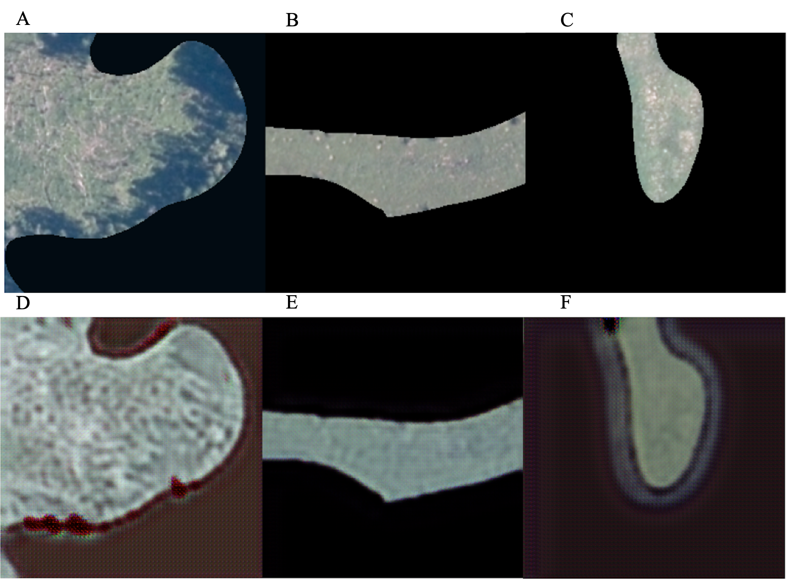
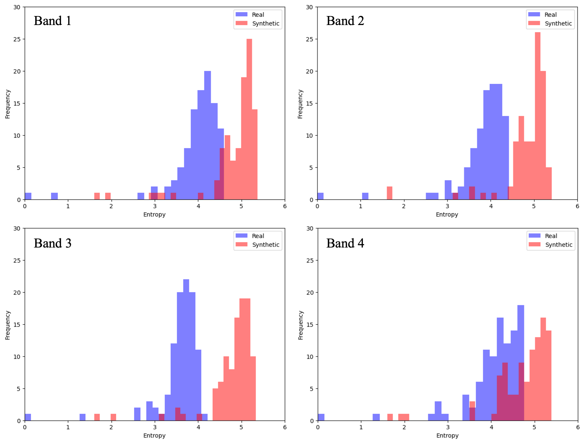

Sample Work
MGEM Capstone
The capstone project for my Masters focused on creating synthetic imagery of fens using deep learning to increase the amount of training data for a landscape classification model. Fens are a relatively rare form of wetlands, and therefore training data is limited. Using the deep learning tools in ArcGIS, I was able to create synthetic images of fens that approximated the characteristics of real fen imagery.

Figure 1. Real training images representing marshes (A, B, C) and synthetically created images representing fens (D, E, F) from the CycleGAN model. Using the CycleGAN deep learning framework in ArcGIS, style transfer was accomplished to create synthetic fen imagery from imagery of marshes.
Study Area
The data for my project came from classified imagery of wetlands in the Prairie Pothole Region of Canada. The following figure represents the training data for my CycleGAN model.

Code Snippets
For my project I calculated statistics for the real and synthetic images. One metric used to quantify differences between real and synthetic images was entropy, a measure of the randomness present in images. These are some functions I wrote to plot histograms of image entropy and preform a t-test between the real and synthetic images.
def compute_entropy(image_band, bins=256):
"""Compute entropy of an image band."""
hist, _ = np.histogram(image_band.flatten(), bins=bins, density=True)
hist += 1e-10 # Avoid zero probabilities
return entropy(hist)
def entropy_ttest(real_folder, synthetic_folder):
"""Compute entropy for each image band and perform t-test between real and synthetic images."""
real_images = load_images(real_folder)
synthetic_images = load_images(synthetic_folder)
num_bands = real_images[0].shape[0]
entropy_results = {f'Band {b+1}': {'real': [], 'synthetic': []} for b in range(num_bands)}
for real_img, synth_img in zip(real_images, synthetic_images):
real_img = remove_zeros(real_img)
synth_img = remove_zeros(synth_img)
for band in range(num_bands):
real_entropy = compute_entropy(real_img[band])
synthetic_entropy = compute_entropy(synth_img[band])
entropy_results[f'Band {band+1}']['real'].append(real_entropy)
entropy_results[f'Band {band+1}']['synthetic'].append(synthetic_entropy)
ttest_results = {}
for band, values in entropy_results.items():
t_stat, p_value = ttest_ind(values['real'], values['synthetic'])
ttest_results[band] = {'t_stat': t_stat, 'p_value': p_value}
print(f"{band} - t-statistic: {t_stat:.4f}, p-value: {p_value:.4f}")
# Plot histograms of entropy for real and synthetic images
for band in range(num_bands):
plt.figure(figsize=(8, 6))
plt.hist(entropy_results[f'Band {band+1}']['real'], bins=30, alpha=0.5, label='Real', color='blue')
plt.hist(entropy_results[f'Band {band+1}']['synthetic'], bins=30, alpha=0.5, label='Synthetic', color='red')
#plt.title(f'Band {band+1} Entropy Histogram')
plt.xlabel('Entropy')
plt.ylabel('Frequency')
plt.xlim(0, 6)
plt.ylim(0, 30)
plt.legend()
plt.show()
# Plot boxplots of entropy for real and synthetic images
for band in range(num_bands):
plt.figure(figsize=(6, 6))
data = [entropy_results[f'Band {band+1}']['real'], entropy_results[f'Band {band+1}']['synthetic']]
plt.boxplot(data, tick_labels=['Real', 'Synthetic'])
#plt.title(f'Band {band+1} Entropy Boxplot')
plt.ylabel('Entropy')
plt.show()
return ttest_resultscompute_entropy <- function(image_band, bins = 256) {
hist_vals <- hist(image_band[], breaks = bins, plot = FALSE)$density
hist_vals <- hist_vals + 1e-10 # Avoid zero probabilities
return(Entropy(hist_vals, method = "ML"))
}
entropy_ttest <- function(real_folder, synthetic_folder) {
real_files <- list.files(real_folder, full.names = TRUE)
synthetic_files <- list.files(synthetic_folder, full.names = TRUE)
if (length(real_files) != length(synthetic_files)) {
stop("Mismatch in dataset sizes")
}
real_rasters <- lapply(real_files, raster::stack)
synthetic_rasters <- lapply(synthetic_files, raster::stack)
num_bands <- nlayers(real_rasters[[1]])
entropy_results <- vector("list", num_bands)
names(entropy_results) <- paste("Band", 1:num_bands)
for (b in 1:num_bands) {
entropy_results[[b]] <- list(real = c(), synthetic = c())
for (i in seq_along(real_rasters)) {
real_band <- real_rasters[[i]][[b]]
synthetic_band <- synthetic_rasters[[i]][[b]]
real_band <- real_band[real_band != 0] # Remove zeros
synthetic_band <- synthetic_band[synthetic_band != 0]
real_entropy <- compute_entropy(real_band)
synthetic_entropy <- compute_entropy(synthetic_band)
entropy_results[[b]]$real <- c(entropy_results[[b]]$real, real_entropy)
entropy_results[[b]]$synthetic <- c(entropy_results[[b]]$synthetic, synthetic_entropy)
}
}
ttest_results <- list()
for (b in 1:num_bands) {
t_result <- t.test(entropy_results[[b]]$real, entropy_results[[b]]$synthetic)
ttest_results[[paste("Band", b)]] <- list(t_stat = t_result$statistic, p_value = t_result$p.value)
cat(sprintf("Band %d - t-statistic: %.4f, p-value: %.4f\n", b, t_result$statistic, t_result$p.value))
}
for (b in 1:num_bands) {
entropy_df <- data.frame(
Entropy = c(entropy_results[[b]]$real, entropy_results[[b]]$synthetic),
Type = rep(c("Real", "Synthetic"), each = length(entropy_results[[b]]$real))
)
ggplot(entropy_df, aes(x = Entropy, fill = Type)) +
geom_histogram(alpha = 0.5, position = "identity", bins = 30) +
labs(title = paste("Band", b, "Entropy Histogram"), x = "Entropy", y = "Frequency") +
theme_minimal() +
theme(legend.position = "top")
}
for (b in 1:num_bands) {
entropy_df <- data.frame(
Entropy = c(entropy_results[[b]]$real, entropy_results[[b]]$synthetic),
Type = rep(c("Real", "Synthetic"), each = length(entropy_results[[b]]$real))
)
ggplot(entropy_df, aes(x = Type, y = Entropy, fill = Type)) +
geom_boxplot() +
labs(title = paste("Band", b, "Entropy Boxplot"), y = "Entropy") +
theme_minimal()
}
return(ttest_results)
}Code Output

Entropy T-tests:
Band 1 - t-statistic: -9.7605, p-value: 0.0000
Band 2 - t-statistic: -11.8979, p-value: 0.0000
Band 3 - t-statistic: -15.6903, p-value: 0.0000
Band 4 - t-statistic: -6.6893, p-value: 0.0000Cartography
During the MGEM program I also gained experience doing GIS analysis and creating captivating maps. Here are a few samples of my maps: